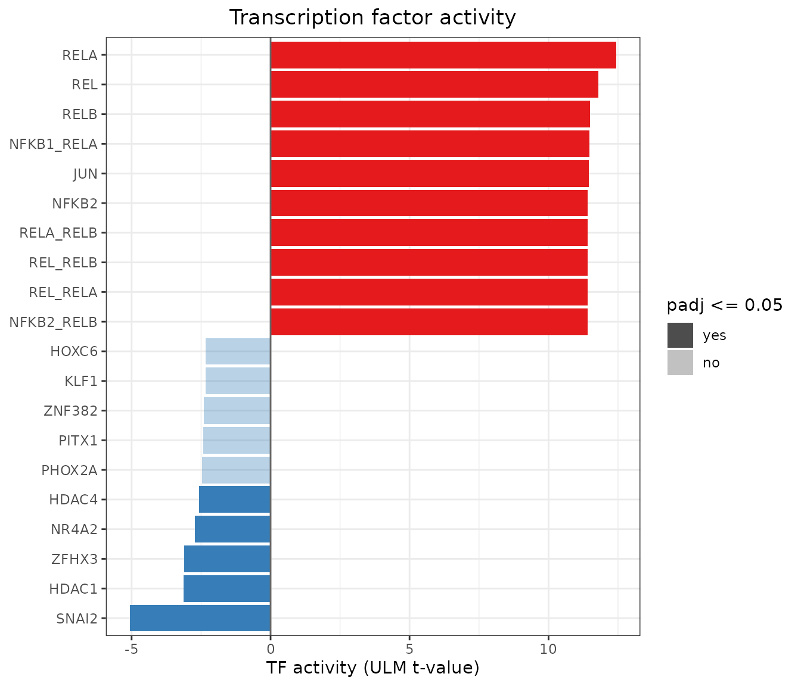
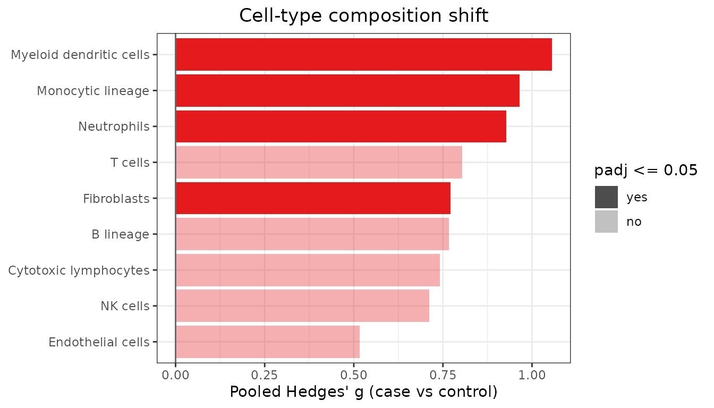
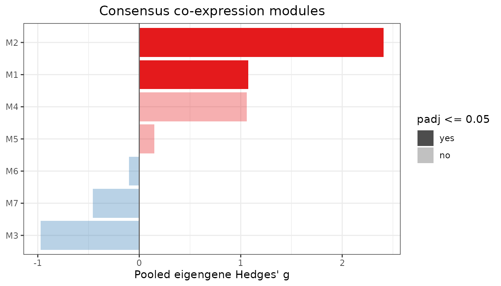
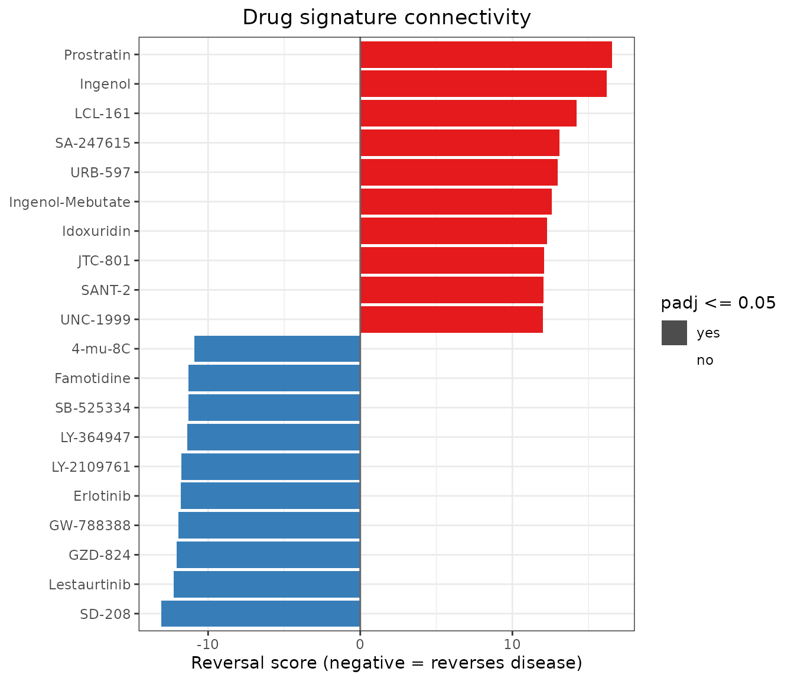

Downstream biology: from meta-signature to mechanism
Md. Jubayer Hossain
2026-10-14
Source:vignettes/downstream_biology.Rmd
downstream_biology.RmdA list of meta-DEGs is the starting point for biology, not the end. Module 9 turns a meta-signature into testable hypotheses using public prior knowledge. It answers four questions:
- Transcription factors. Which regulators explain the signature?
- Cell composition. Is the signature caused by shifts in cell types?
- Co-expression. Which gene programs are shared by all cohorts?
- Drug reversal. Which compounds reverse the disease state?
The demo is a meta-analysis of pancreatic ductal adenocarcinoma (PDAC) versus adjacent non-tumour pancreas in three independent GEO cohorts:
| GEO | Tumour / non-tumour |
|---|---|
| GSE130688 | 15 / 15 |
| GSE136569 | 5 / 5 |
| GSE171485 | 6 / 6 |
All counts are NCBI GEO-generated raw counts. Sample labels come from the GEO series metadata. The shipped file contains real inputs:
- the genome-wide random-effects (REML) meta-analysis (29,679 genes);
- the three cohorts, restricted to cell-type markers and the 1,500 most variable genes, with their true library sizes;
- the CollecTRI TF-target network (Mueller-Dott et al. 2023);
- MCP-counter markers (Becht et al. 2016);
- 200 LINCS L1000 drug signatures (Subramanian et al. 2017).
The file is rebuilt by scripts/fetch_case_study_data.R,
scripts/run_case_study_applications.R and
scripts/make_downstream_extdata.R in the source
repository.
library(metaXpress)
ds <- readRDS(system.file("extdata", "case_study_downstream.rds",
package = "metaXpress"))
ds$meta_result
#> metaXpressResult
#> Method : random_effects
#> Studies : 3
#> Genes : 29679
#> Sig genes : 2739 (meta_padj <= 0.05)
nrow(ds$collectri) # TF-target interactions
#> [1] 62411
length(ds$lincs) # drug signatures in the demo subset
#> [1] 2001. Transcription factor activity
Which upstream regulators explain the PDAC tumour program?
mx_tf_activity() regresses the signed meta z-score of every
gene on each TF’s target weights (decoupleR’s ULM method):
tf <- mx_tf_activity(ds$meta_result, ds$collectri, id_col = "symbol",
min_size = 10)
head(tf, 10)
#> source score pvalue padj n_targets
#> 1 RELA 12.43113 2.190009e-35 1.208885e-32 878
#> 2 REL 11.79518 4.910641e-32 1.355337e-29 740
#> 3 RELB 11.49657 1.604001e-30 1.825671e-28 740
#> 4 NFKB1_RELA 11.46201 2.387745e-30 1.825671e-28 724
#> 5 JUN 11.44083 3.045100e-30 1.825671e-28 799
#> 6 NFKB2 11.41726 3.989507e-30 1.825671e-28 741
#> 7 NFKB1_NFKB2 11.39821 4.961063e-30 1.825671e-28 724
#> 8 NFKB1_REL 11.39821 4.961063e-30 1.825671e-28 724
#> 9 NFKB1_RELB 11.39821 4.961063e-30 1.825671e-28 724
#> 10 NFKB2_REL 11.39821 4.961063e-30 1.825671e-28 724
mx_downstream_plot(tf, top = 20)
These results use the genome-wide meta-signature. Of 552 TFs with at least 10 measured targets, 148 are significant (FDR < 0.05):
- NF-kB (RELA, REL, RELB, NFKB1/2) and AP-1 (JUN) dominate. This is the inflammatory signalling of the PDAC tumour microenvironment.
- E2F1/E2F4, MYC and TP53 targets are also activated. Proliferation and p53-pathway target genes are up in tumour.
- SNAI2 and the HDACs HDAC1 and HDAC4 are the significantly repressed regulators.
2. Cell-type composition
Could the signal be caused by tumours simply containing more immune
or stromal cells? mx_cell_composition() scores each sample
for each cell type, computes Hedges’ g per cohort and pools them:
comp <- mx_cell_composition(ds$studies, ds$markers)
comp[, c("cell_type", "meta_g", "padj", "i_squared",
grep("^g_", names(comp), value = TRUE))]
#> cell_type meta_g padj i_squared g_GSE130688_PDAC
#> 1 Neutrophils 0.9281460 0.01090392 0.00000 1.042683
#> 2 Monocytic lineage 0.9647060 0.01090392 12.46898 1.362890
#> 3 Myeloid dendritic cells 1.0560312 0.01090392 26.87887 1.575953
#> 4 Fibroblasts 0.7719586 0.01712301 0.00000 1.025066
#> 5 T cells 0.8038822 0.10039007 46.24228 1.321310
#> 6 Cytotoxic lymphocytes 0.7407763 0.10039007 45.19062 1.338888
#> 7 B lineage 0.7670349 0.10039007 49.22645 1.351987
#> 8 NK cells 0.7115487 0.10424301 47.18076 1.332464
#> 9 Endothelial cells 0.5160968 0.14135647 27.70855 0.962206
#> g_GSE136569_PDAC g_GSE171485_PDAC
#> 1 0.63849360 0.9034475
#> 2 0.24596432 0.8365322
#> 3 0.41221790 0.7814624
#> 4 0.20317053 0.6791499
#> 5 -0.12621684 0.9129071
#> 6 -0.03987553 0.5829234
#> 7 -0.12978158 0.7673988
#> 8 -0.05681140 0.5239792
#> 9 -0.24602668 0.4034735
mx_downstream_plot(comp)
Neutrophils, monocytic cells, myeloid dendritic cells and fibroblasts are significantly higher in tumour (FDR < 0.05) and homogeneous across cohorts (I² ≤ 27%). This is the desmoplastic, myeloid-rich stroma typical of PDAC. Lymphocyte scores are higher in two cohorts but not in GSE136569, so they are heterogeneous and not significant.
The implication for interpretation: part of the gene-level signature reflects tissue composition, not tumour-cell-intrinsic regulation. Inflammatory and ECM genes in particular should be read with this in mind. CD8 T cells are dropped because only one of their markers was measured.
3. Consensus co-expression modules
mx_coexpression_modules() finds gene programs whose
co-expression holds in every cohort (minimum
correlation across studies), then tests each module’s eigengene between
tumour and normal:
net <- mx_coexpression_modules(ds$studies, n_genes = 1500, cut_height = 0.3,
min_module_size = 20,
meta_result = ds$meta_result)
ms <- net$module_stats
# Hub genes are Entrez IDs; show symbols stored in rowData
sym <- setNames(SummarizedExperiment::rowData(ds$studies[[1]])$symbol,
rownames(ds$studies[[1]]))
ms$hub_genes <- vapply(strsplit(ms$hub_genes, ", "),
function(g) paste(sym[g], collapse = ", "), character(1))
ms[, c("module", "n_genes", "meta_g", "padj", "pct_meta_up", "hub_genes")]
#> module n_genes meta_g padj pct_meta_up
#> 1 M2 279 2.4058763 0.0001507716 76.70251
#> 2 M1 825 1.0753048 0.0096953003 22.66667
#> 3 M3 93 -0.9722924 0.0589553432 0.00000
#> 4 M4 59 1.0582353 0.1523270848 10.16949
#> 5 M7 21 -0.4564404 0.3825758256 0.00000
#> 6 M5 43 0.1487603 0.6945952310 0.00000
#> 7 M6 21 -0.1013718 0.8174084496 0.00000
#> hub_genes
#> 1 MST1R, TSPAN1, B3GNT3, ITGB4, PLEK2
#> 2 TPM4, RFTN1, PXDN, ABCA1, LAMA4
#> 3 PNLIPRP1, CELP, CUZD1, FAM24B-CUZD1, CPA2
#> 4 IGKJ1, IGLJ2, IGKV3-15, IGKV3-20, IGKV2-28
#> 5 RNA45SN5, RNA45SN1, RNA28SN3, NA, RNA45SN4
#> 6 ITGA7, CHRDL1, FHL1, TMTC1, SCARA5
#> 7 PCSK2, SLC30A8, ABCC8, GAD2, UNC80
mx_downstream_plot(net)
Two modules are significant and a third shows a trend:
- M2 (tumour epithelial, up). The leading module (FDR = 1.5e-4) has MST1R (RON) as its top hub, with TSPAN1, B3GNT3, ITGB4 and PLEK2. 77% of its genes are up-regulated meta-DEGs. MST1R is a recognised PDAC oncogene and therapeutic target.
- M1 (stroma and ECM, up; FDR = 0.01). Hubs include TPM4, PXDN and LAMA4, consistent with the fibroblast shift above.
- M3 (acinar, down; FDR = 0.06). PNLIPRP1, CELP, CUZD1 and CPA2 mark the loss of normal exocrine tissue in tumour samples.
The remaining modules capture immunoglobulin, ribosomal RNA, smooth muscle and islet (PCSK2, SLC30A8, ABCC8) programs.
4. Drug signature reversal
Which compounds push expression in the opposite direction to the
tumour state? mx_drug_connectivity() scores each drug’s
up/down gene sets against the meta-ranking (negative = reverses the
disease):
drugs <- mx_drug_connectivity(ds$meta_result, ds$lincs, id_col = "symbol")
head(drugs, 10)
#> drug reversal_score pvalue padj cmap_score n_up n_down
#> 1 SD-208 -13.08356 4.088232e-39 1.635293e-37 -0.5380123 227 234
#> 2 Lestaurtinib -12.25079 1.663613e-34 3.696917e-33 -0.5086122 230 231
#> 3 GZD-824 -12.06213 1.674016e-33 3.043666e-32 -0.4906545 223 217
#> 4 GW-788388 -11.94981 6.506993e-33 9.295704e-32 -0.5404217 233 228
#> 5 Erlotinib -11.79395 4.194144e-32 5.592192e-31 -0.4839351 217 228
#> 6 LY-2109761 -11.75993 6.278994e-32 7.848742e-31 -0.5172403 231 236
#> 7 LY-364947 -11.37535 5.548204e-30 5.840215e-29 -0.5109724 227 229
#> 8 SB-525334 -11.29803 1.341968e-29 1.278065e-28 -0.5654886 230 229
#> 9 Famotidine -11.28561 1.545572e-29 1.405065e-28 -0.4484308 222 224
#> 10 4-mu-8C -10.89429 1.227160e-27 8.765430e-27 -0.4265940 221 224
mx_downstream_plot(drugs, top = 20)
Five of the top eight compounds inhibit the TGF-beta type I receptor ALK5: SD-208, GW-788388, LY-2109761, LY-364947 and SB-525334. TGF-beta drives PDAC stromal desmoplasia. The EGFR inhibitor erlotinib, which is approved in combination with gemcitabine for advanced PDAC, ranks fifth. This is a useful positive control for the method.
Caveats. This demo ships only 200 of the 5,425 LINCS signatures, chosen from the full ranking, so the adjusted p-values here are not meaningful. Even in the full analysis the p-values assume independent genes and are anti-conservative, so use the score for ranking only. LINCS signatures come from cancer cell lines, so these hits are hypotheses for experimental follow-up. The full analysis is reproduced by
scripts/run_case_study_applications.Rin the package source repository.
sessionInfo()
#> R version 4.6.1 (2026-06-24)
#> Platform: x86_64-pc-linux-gnu
#> Running under: Ubuntu 24.04.5 LTS
#>
#> Matrix products: default
#> BLAS: /usr/lib/x86_64-linux-gnu/openblas-pthread/libblas.so.3
#> LAPACK: /usr/lib/x86_64-linux-gnu/openblas-pthread/libopenblasp-r0.3.26.so; LAPACK version 3.12.0
#>
#> locale:
#> [1] LC_CTYPE=C.UTF-8 LC_NUMERIC=C LC_TIME=C.UTF-8
#> [4] LC_COLLATE=C.UTF-8 LC_MONETARY=C.UTF-8 LC_MESSAGES=C.UTF-8
#> [7] LC_PAPER=C.UTF-8 LC_NAME=C LC_ADDRESS=C
#> [10] LC_TELEPHONE=C LC_MEASUREMENT=C.UTF-8 LC_IDENTIFICATION=C
#>
#> time zone: UTC
#> tzcode source: system (glibc)
#>
#> attached base packages:
#> [1] stats graphics grDevices utils datasets methods base
#>
#> other attached packages:
#> [1] metaXpress_0.99.1
#>
#> loaded via a namespace (and not attached):
#> [1] sass_0.4.10 generics_0.1.4
#> [3] SparseArray_1.12.3 lattice_0.22-9
#> [5] digest_0.6.39 magrittr_2.0.5
#> [7] evaluate_1.0.5 grid_4.6.1
#> [9] RColorBrewer_1.1-3 fastmap_1.2.0
#> [11] Matrix_1.7-5 jsonlite_2.0.0
#> [13] ggrepel_0.9.8 scales_1.4.0
#> [15] codetools_0.2-20 textshaping_1.0.5
#> [17] jquerylib_0.1.4 abind_1.4-8
#> [19] cli_3.6.6 rlang_1.3.0
#> [21] XVector_0.52.0 Biobase_2.72.0
#> [23] withr_3.0.3 DelayedArray_0.38.2
#> [25] cachem_1.1.0 yaml_2.3.12
#> [27] otel_0.2.0 S4Arrays_1.12.1
#> [29] tools_4.6.1 parallel_4.6.1
#> [31] BiocParallel_1.46.0 dplyr_1.2.1
#> [33] ggplot2_4.0.3 SummarizedExperiment_1.42.0
#> [35] BiocGenerics_0.58.1 vctrs_0.7.3
#> [37] R6_2.6.1 matrixStats_1.5.0
#> [39] stats4_4.6.1 lifecycle_1.0.5
#> [41] Seqinfo_1.2.0 S4Vectors_0.50.3
#> [43] fs_2.1.0 htmlwidgets_1.6.4
#> [45] IRanges_2.46.0 ragg_1.5.2
#> [47] pkgconfig_2.0.3 desc_1.4.3
#> [49] pkgdown_2.2.1 pillar_1.11.1
#> [51] bslib_0.12.0 gtable_0.3.6
#> [53] glue_1.8.1 Rcpp_1.1.2
#> [55] systemfonts_1.3.2 xfun_0.61
#> [57] tibble_3.3.1 GenomicRanges_1.64.0
#> [59] tidyselect_1.2.1 MatrixGenerics_1.24.0
#> [61] knitr_1.52 farver_2.1.2
#> [63] htmltools_0.5.9 labeling_0.4.3
#> [65] rmarkdown_2.32 compiler_4.6.1
#> [67] S7_0.2.2